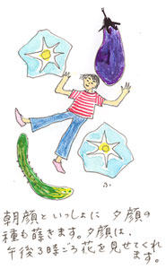
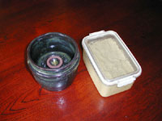

|
■旅は道づれ「朝顔、ぬかみそ」
20歳代に、よく国内の旅をした。道づれはいつも決まった相手だった。ひとまわり歳上のケイコさん。伊良湖岬。金沢。徳島。小豆島。木曽。仙台……。
缶ビールと珍味をかかえて新幹線に乗るときの嬉しさ。旅先で別行動をするスリル。鼻をきかせていい店を探す楽しみ。打ち明け話も詮索もない旅だった。手痛い恋の終わりを迎えた私を連れ出してくれたときも、ケイコさんはなんにも言わなかったっけなあ。あの時代、旅の作法というものを教えられたのだ。ともに旅のできる相手はそうそういるものではないということも、だから私は22歳くらいのとき、すでに知っていた。
滅法変わった3人旅の思い出がある。
行き先は箱根。芦ノ湖周辺で仕事の取材をして1泊し、その足で富士山麓にて夏休みを過ごしている子どもたちと合流する計画だ。思いきってひとりでハンドルを握って、出かけたのだった。
道づれは朝顔とぬかみその甕（かめ）である。
小学校1年生の娘が1学期のおわりの日、学校で育てていた朝顔の鉢をかついで帰ってきた。夏休みの間世話しながら、咲いた花の数を記録するという宿題なのだ。娘の朝顔は、白い花を咲かせた。夏の朝、庭で白い花と目が合うと、涼やかさが立ちのぼるようだが、これがたまにしか花をつけない。夏休みに入って15日、白い花をまだ4つか5つしか見ていない。
一方、ぬかみその甕のなかには、50年以上も生きつづけてきたぬか床が入っている。仕事で訪ねた方の家で、大きな樽のなかのぬか床を見て、ちゃっかり分けていただいてきたものだ。大きめの甕を用意して、大事にかきまぜかきまぜやってきた。
朝顔もぬかみそも、「連れて行って」とは言わなかったけれども、留守番の猫に水やりと花の記録、ぬか床の世話をたのむわけにもいかない。「旅は道づれ世は情け」という諺（ことわざ）をひっぱり出してきて、車に乗ってもらった。
さて、道中箱根の山にさしかかると、車は右に左に揺れてきしんだ。丈高く行燈（あんどん）の形に仕立てられた朝顔は揺すぶられながらも、ぬかみそのどっしりとした甕に支えられ葉を傷つけることなく無事に旅をつづけていた。
夜もおそくなって仕事を終え、旅館にたどり着いた私は、
「きょうは水もやれない、かきまぜることもできないけど、ごめんね。おやすみなさい」
と声をかけ、朝顔とぬかみそを車に残した。
翌朝。車の後部座席を見て、驚いた。なんということだろう。車内で身をちぢめている朝顔が、白い花を咲かせている。それもたくさん。1、2、3、4、5、……11、12。全部で12も咲いているのだった。
「連れてきてくれてありがとう」
と言われたような気がして、うれしかった。朝顔は、車のなかで自分を支えつづけてくれたぬかみその甕にも、ありがとうと言いたかったのかもしれない。
これはいまから8年前にあった、ほんとうの話。あれから毎年、5月のはじめに白い朝顔の種を蒔くようになった。ぬか床は元気だが、規模を縮小して密閉容器に移しかえ、冷蔵庫に入れられるようにした。漬けるのも春先から秋風が立つころまで。寒くなると、冬眠の準備（ぬかを足してかたい床にし、表面に塩でふたをする）をする。
8年前の夏、朝顔がぬかみそに感謝していたかどうか。それはわからないが、ぬかみそというのは、ほんとうに頼みになる存在だ。先日もこんなことがあった。鰻（うなぎ）をご馳走すると言われてうかれて出かけ、私ときたら鰻をさしおいて、添えられてきたぬか漬けを誉めたのだ。
「いいぬか漬けだったねえ」
と言うと、おごってくれた友人が、
「清水の舞台から飛び下りるつもりで、極上の鰻をご馳走したのに」
と、ふくれている。
「まあまあ、鰻あってのぬか漬けじゃないの」
でもほんとうは、ぬか漬けあっての鰻かな。

■ぬか床のつくり方、世話の仕方
ぬか……………………………1kg
塩……………………………200g
水…………………………8カップ
・水と塩を合わせて煮とかし、さましておく。
・ぬかのなかに、さました塩水を少しずつ加えながら木杓子で（金物は使わない方がよい）混ぜる。
・赤唐辛子（まるのまま）2本、だし昆布5センチ入れる（これらは、あとから入れてもよい）。
・きゃべつの葉や、野菜のくずを1日漬けて、捨てる。この捨て漬けを3回ほどくり返す。
・いよいよ本漬け。野菜に塩をまぶしたり、もんだりして漬ける。きゅうり、茄子、かぶ、大根、にんじん、きゃべつ、セロリ（セロリのぬか漬けは美味しい！）など。
〈世話の仕方〉
・山椒の実、青梅などを、その季節に入れると味がよくなる上、虫よけにもなる（不思議なことに、青梅は気がつくと、種までなくなってしまっている）。
・いちばんいいのは、ぬか漬け上手の友人からぬか床を少し分けてもらって足すこと。すぐに味がなじんで、美味しくなる。
・忙しいひとは密閉容器でぬか床をつくり、冷蔵庫に入れると便利。漬ける時間を考えて、冷蔵庫から出しておくこともできる（私の経験では、冷蔵庫に入れたり、出したりしても味にさわりはない）
※とにかく、よく混ぜることです。混ぜるは子どもの「お手伝い」に向く仕事。糟糠（そうこう）の息子、娘……。
※冬眠は塩でふたをする方法のほか、少量なら冷凍保存することもできます。

|